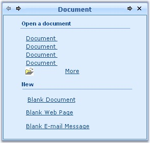
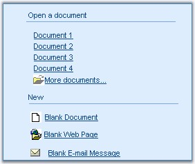
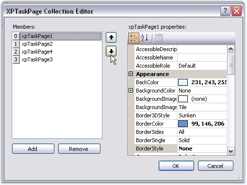
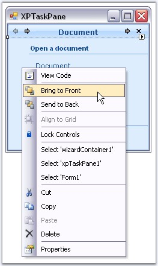

XPTaskPane has a TaskPanePageContainer which hosts the Task pages. Any number of controls can added to the Task pages and can be customized. Properties which controls the appearance of the Task pages are discussed in this section.
Page Title and Layout Name
The title text for an XPTaskPage can be edited using XPTaskPage.Title property.
|
Property |
Description |
|
Title |
Sets the title text for Task page. |
|
SelectedPage |
Specifies the selected Task page. |
|
LayoutName |
The individual Task page is identified using its LayoutName in the SelectedPage property. By default the LayoutName is set as Card1, for the first page added, Card2 for the next page and so on. |
|
[C#]
this.xpTaskPage1.Title = "XPTaskPane Header"; this.xpTaskPage1.LayoutName = "Card1"; |
|
[VB.NET]
Me.xpTaskPage1.Title = "XPTaskPane Header" Me.xpTaskPage1.LayoutName = "Card1" |
Figure 1250: XPTaskPage Title = "XPTaskPane Header"
TaskPage Border
The below properties controls the border settings for a Task page.
|
XPTaskPage Property |
Description |
|
BorderStyle |
Specifies the border style for Task page. The available styles are Fixed3D and FixedSingle. |
|
Border3DStyle |
Specifies the 3D border style for Task page. The available styles are, · · RaisedOuter, · SunkenOuter, · RaisedInner, · Raised, · Etched, · SunkenInner, · Bump, · Sunken, · Adjust and · Flat. |
|
BorderColor |
Sets the border color for the Task page. |
|
BorderSides |
Specifies the sides of the control which should have border. |
|
BorderSingle |
Specifies the 2D Border style for the Task page when BorderStyle property is set to FixedSingle. The available styles are,
· Dotted, · Dashed, · Solid, · Inset and · Outset. |
|
[C#]
this.xpTaskPage1.BorderColor = System.Drawing.Color.SteelBlue this.xpTaskPage1.BorderStyle = System.Windows.Forms.BorderStyle.FixedSingle |
|
[VB.NET]
Me.xpTaskPage1.BorderColor = System.Drawing.Color.SteelBlue Me.xpTaskPage1.BorderStyle = System.Windows.Forms.BorderStyle.FixedSingle |

Figure 1251: 2DBorder, Solid Style; BorderColor = "SteelBlue"
XPTaskPage Foreground
Font style and fore color of the Task pages can be set using XPTaskPage.Font and XPTaskPage.ForeColor properties.
|
[C#]
this.xpTaskPage1.Font = new System.Drawing.Font("Arial", 8.25F); this.xpTaskPage1.ForeColor = System.Drawing.Color.SteelBlue; |
|
[VB.NET]
Me.xpTaskPage1.Font = New System.Drawing.Font("Arial", 8.25F) Me.xpTaskPage1.ForeColor = System.Drawing.Color.SteelBlue |

Figure 1252: XPTaskPage FontStyle = "Arial, 8"
See Also
When the end user adds a page to the XPTaskPane control, the order of the page is decided, as the page is added. They can be reordered using any one of the below methods in the designer.
· Through XPTaskPage Collection Editor.

Figure 1253: Reordering Pages Using XPTaskPage Collection Editor
· Select a page in the designer and choose the 'Bring To Front' or 'Send To Back' verb which will move the page to the beginning of the collection or to the end of the collection, respectively.

Figure 1254: Reordering Pages Using 'Bring To Front' and 'Send To Back' Options
Going to Next Page or Previous Page
· Right Click a page in the designer and choose the 'Previous Page' or 'Next Page' verb which will show you the page, which is before the current page or the page which is after the current page. These options can also be accessed through smart tag and property grid commands.

Figure 1255: Next and Previous Page Option in Context Menu
Page Order at RunTime
XPTaskPage allows you to set the next or the previous page to the currently selected page through the NextPage and PreviousPage properties.
|
XPTaskPage Property |
Description |
|
NextPage |
It sets the next page for XP TaskPane. |
|
PreviousPage |
It sets the previous page for XP TaskPane. |
 Note: The TaskPane follows this order
at run time.
Note: The TaskPane follows this order
at run time.
|
[C#]
this.xpTaskPage2.NextPage = this.xpTaskPage3; this.xpTaskPage2.PreviousPage = this.xpTaskPage1; |
|
[VB.NET]
Me.xpTaskPage2.NextPage = Me.xpTaskPage3 Me.xpTaskPage2.PreviousPage = Me.xpTaskPage1 |